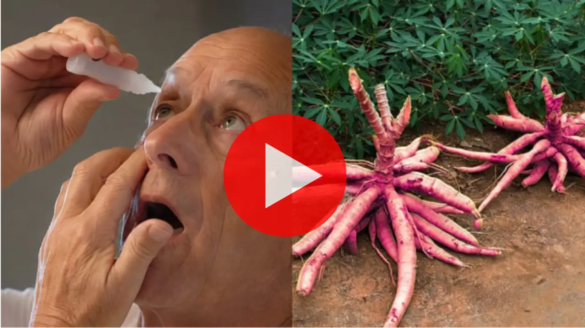

Szemész Sokkoló Felfedezése: A Látásvesztés Nem Öregség — És Egy Piros Gyökér Visszaadhatja A Látását

Először csak a feliratokat nehezebb elolvasni. Aztán a közlekedési táblák elmosódnak. Később abbahagyja az éjszakai vezetést. És egy nap — szinte észrevétlenül — már valaki másnak kell kísérnie Önt mindenhová.
A legkegyetlenebb rész? Egy reggel felébred, és rájön, hogy már nem ismeri fel unokái arcát távolról. Nem tudja elolvasni a saját receptjét. Mások döntenek helyette. És ez nem kell, hogy így legyen.
A Felfedezés, Ami Mindent Megváltoztatott
Dr. Bush évtizedes tapasztalattal rendelkező szemész feltette a kérdést, amit senki más: miért veszítik el egyesek gyorsan a látásukat, míg mások 80 évesen is tisztán látnak?
A válasz sokkoló volt. Az Oxfordi Egyetem több mint 12 000 beteg adatát elemezve megerősítette: a látásvesztés közvetlenül a szem apró ereinek elzáródásával függ össze. Amikor ezek az erek eltömődnek, a sejtek oxigén és tápanyag nélkül maradnak — és csendesen elpusztulnak.

NÉZZE MEG AZ INGYENES VIDEÓT MOSTA videóban Dr. Bush pontosan elmagyarázza, hogyan oldja fel a piros gyökér a szem elzáródásait, és hogyan adhatja vissza a látását — természetesen, otthon.